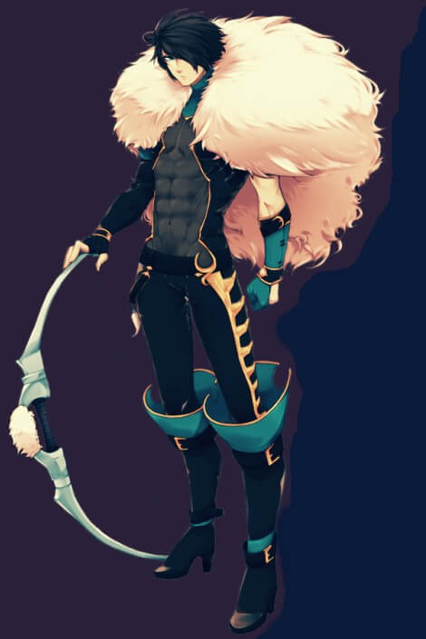
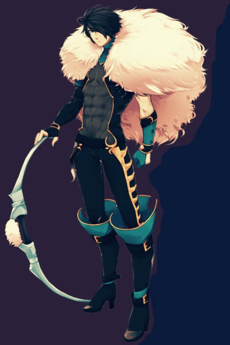

“In days when far greater perils than crime and poverty beset our cities, acts of heroism in the name of the common and just deserve all the greater celebration. Any might train to slaughter man or beast, but there are some conditions for which there can be no preparation. When chaos erupts, the lives of the innocent and the guilty are equally imperiled, and the choice of preserving life too often stands timid in the face of fear. Our sons and neighbors who would run back into a burning building to save a child, or pull forth their fellow man from beneath the raging floodwaters— those are the true heroes." — Alander Wolfstongue, Former Senior Prelate of Kintargo
Lights Extinguished
Kroeger Stride
Tiefling Slayer 1 Rogue 1
Campaign Trait: Shadow Child
Description: This trapper was abandoned at birth with his twin brother and raised by an elderly couple of innkeepers. While his brother Thorn was the strong, handsome young boy (albeit not the brightest), Kroeger was the lithe, slinking, crass one of the bunch, and it wasn’t until the two's quarrel elevated into a brawl at the age of 10 that the innkeepers saw them for the true race that they were, and Kroeger started to temper his thirst for violence. Now, 2 decades since, the adoptive parents have passed away, and the brothers work together to keep the inn running; Thorn, as the barkeep and face of the "Elder Mare" and Kroeger as the silent security and the hunter/trapper keeping the venison stew pot full and furs on the beds.
Cause of Death: Eaten by Goblins - Following a failed attempt at the "Get Help" gambit, Kroeger Stride ended up split off from the group. When the group fought off the goblins and rounded the corner to his location, he was gone, having been dragged down a goblin-hole in the wall. Fighting their way to him, they found him strapped to a table, well seasoned, and being eaten alive by goblins. Though they tried to save him, he died from his wounds.
Sabrina
Half-Elf Witch 3
Campaign Trait: Child of Infamy
Description: This school teacher is sick of censoring content.
Cause of Death: Pierced by Short Swords - While clearing shops of lookouts in the immediate area around an abandoned Temple of Erastil in Rego Cader, the party became devided between ground level and below ground strike teams. In what was thought to be a coordinated effort, Sabrina entered the second story window while others prepared to attack the ground floor and from underground respectively. What sabrina found was two naked tieflings wielding shortswords laying in bed together. Though she told them not to mind her and continue what they were doing while she fled downstairs, they stabbed her to death before help could arrive.
The Janitor
Half-Orc Inquisitor of Nethys 4
Campaign Trait: Conspiracy Hunter
Description: This janitor has done his job for so long now, he has accepted his job as his name, no longer remembering the name he had forsook. Currently, the Janitor is working in a school investigating a student by the name of Sabrina for possibly being a destroyer. Oddly enough the student is also disliked by a teacher named Sabrina, who displays a disdain similar to The Janitor’s for the censorship of information.
Cause of Death: Flayed by Chains - While exploring the fabled Asmodean Knott, the party came upon a lifeless corpse wraped in chains, with the chains broken away and flailing about in a slow spiral over a pit. When the Janitor approached, the chains beat him, but he did not retreat, attacking the corpse at the center of the chains. When the chains came around the second and third time, it struck a lethal blow, ripping skin from the janitors flesh and pulling his emmaciated body off its feat and casting it into the pit.
Xilzrynth
Chelish Sorcerer 4
Campaign Trait: Child of Infamy
Description: During the event that caused the misfortune to their family, this shephard saw a shape in the sky an followed it for days. Whatever interests they held before fell to the wayside; now they absentmindedly tend to flocks searching for signs of what they saw.
Cause of Death: The Sickness - While he survived his trip through the Asmodean Knott, he returned sickly and withering. He was diagnosed with mutiple diseases, including Filth Fever, Ghoul Fever, and Mummy Rot. The latter diseases' curse made him difficult to heal, and try as they might, his friends watched him waste away despite scrolls and spells and restful aid. One morning, they checked on him in his room only to find a pile of dust as his only remains.
Mungo Whyrm
Dwarven Cleric of Abadar 4
Campaign Trait: Shadow Child
Description: After springing out of a hole in the ground, as dwarves are want to do, Mungo led a peaceful life as a dirt-loving, kind-hearted engineer's pupil. This profession, while honorable, was more fit for an NPC than an adventursome dwarf as Mungo realized more and more of his God-Given abilities as a healer. Following this call to action, he could no longer sit idly by, and answered his old friend Arael's call to action...
Cause of Death: Suicide - While he survived his trip through the Asmodean Knott, Mungo felt a creeping sense of doom. Distracting him from his work, he could not figure out why he felt this way, but he knew his days were numbered. As he struggled and failed to help his friend recover from sickness, he saw his time ticking down and fell into melancholy. One morning, he checked on his friend only discover he perished from his disease, and he became convinced it was his last day on earth. Determined to go out on his own terms, he carefully wrote out a will regarding his earthly possessions and hung himself in the bathhouse.
Darcher the Archer
Dhampir Archer Fighter 4
Campaign Trait: Westcrown Firebrand
Description: This poet wants the world to be better, but doesn't think anyone is good enough to change it.
Cause of Death: Suicide - Hating life and everything about it, Darcher crossed paths with a Wraith and punched it weakly until, angry at being disturbed, Darcher was drained and raised as a wraith by its side.
Gotfrid
Human Cult Leader Warpriest 6
Campaign Trait: Unknown
Description: Unknown
Gangs Disbanded
White Goblin's
Goblin Gang
Description: These Goblin's paint their faces white and make chaotic raids on Rego Crua from the sewer system.
Leader: Whitechin - Deceased
Destruction: With the death of Whitechin, the White Goblin's have broken up into rivaling gangs vieing for control of the sewers, effectively removing them as a threat to the Wiscrani above.
Bastards of Erebus
Tiefling Gang
Description: A new gang responsible for a spree of midnight B&E's.
Leader: Palaveen - Deceased
Destruction: With its leadership and the majority of its members killed in a raid by the Lights of Westcrown, the Bastards of Erebus have fully dispersed.


 
